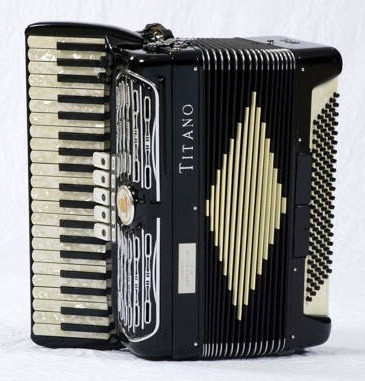
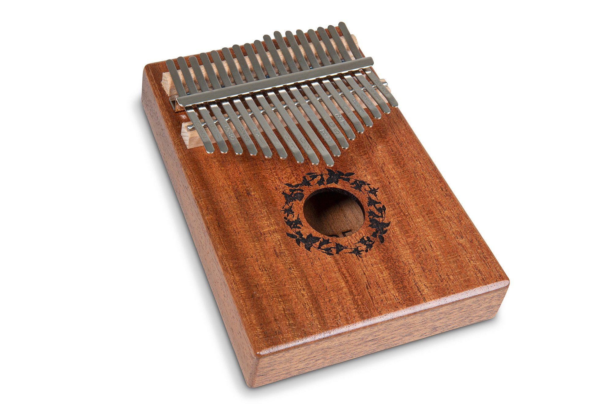
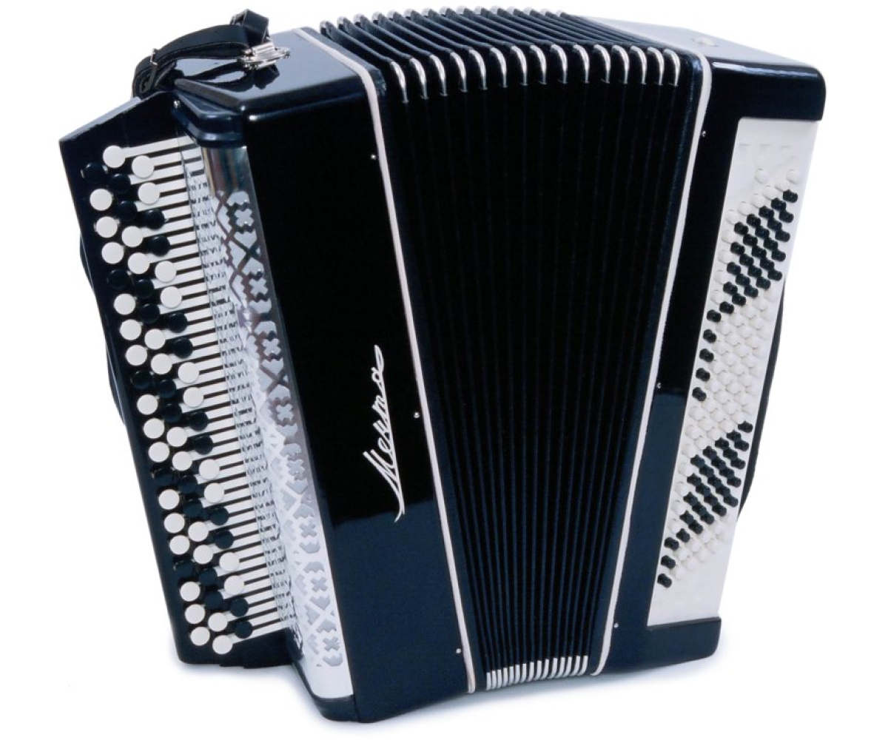
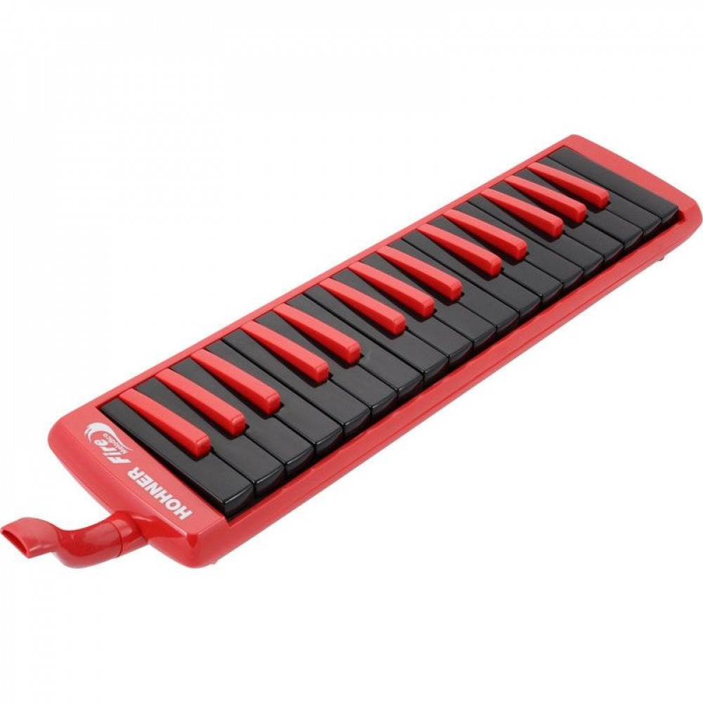

Акордеон був створений у 1829 році австрійцем Кирилом Деміаном.
Він популярний у народній та естрадній музиці. Його особливістю
є здатність одночасно видавати мелодію та акомпанемент завдяки клавішам і кнопкам з обох боків.

Акордеон
Калімба — африканський інструмент, відомий ще з давніх часів.
Має металеві язички, які видають дзвінкий, м’який звук при натисканні.
Її компактність і спокійне звучання роблять її популярною для медитацій і сольних виступів.

Калімба
Баян — різновид акордеона, удосконалений у Росії на початку XX століття.
Вирізняється глибшим, насиченим звуком і кнопковою клавіатурою. Часто
використовується у фольклорі, академічній музиці та ансамблях.

Баян
Піаніка з’явилась у XX столітті як портативний клавішно-духовий інструмент.
Її виділяє поєднання клавіш і видування повітря через мундштук, що дозволяє
легко навчатися та імпровізувати навіть новачкам.
